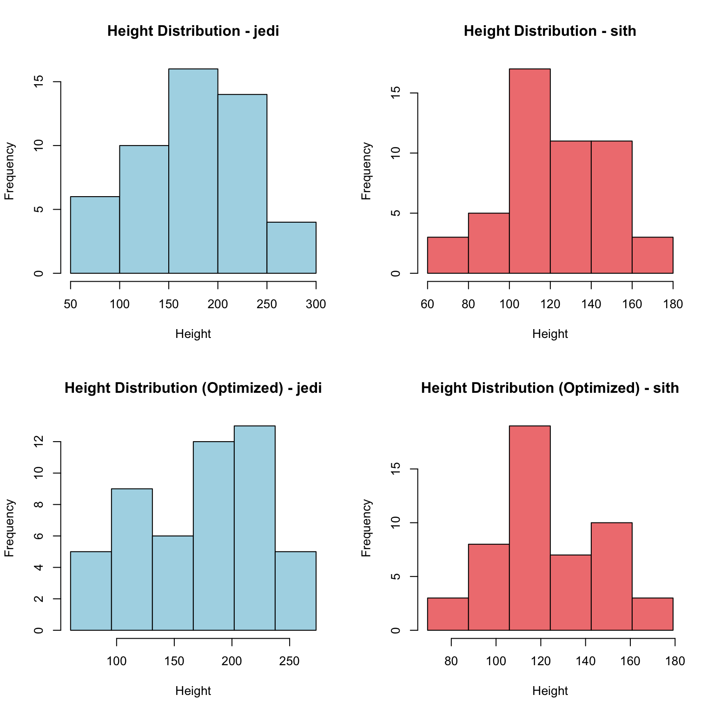
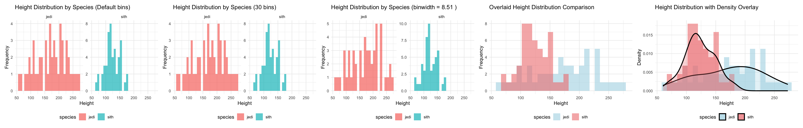
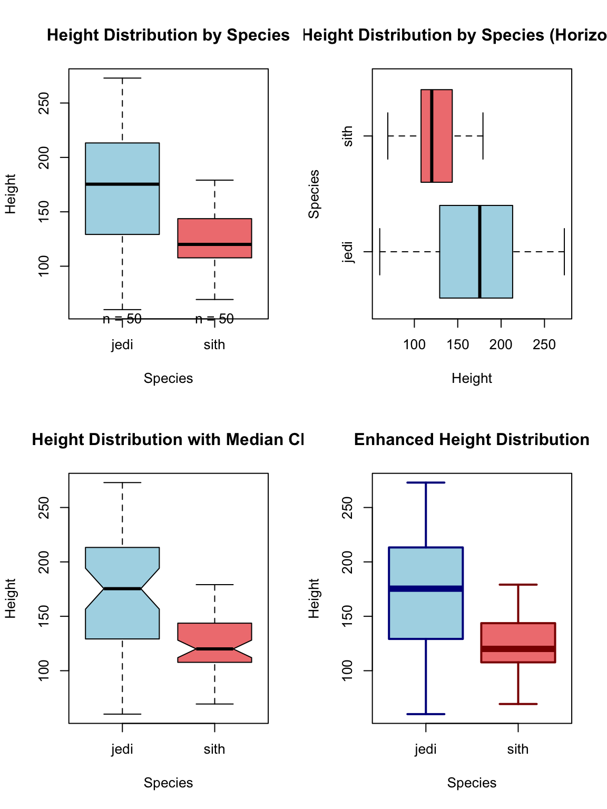
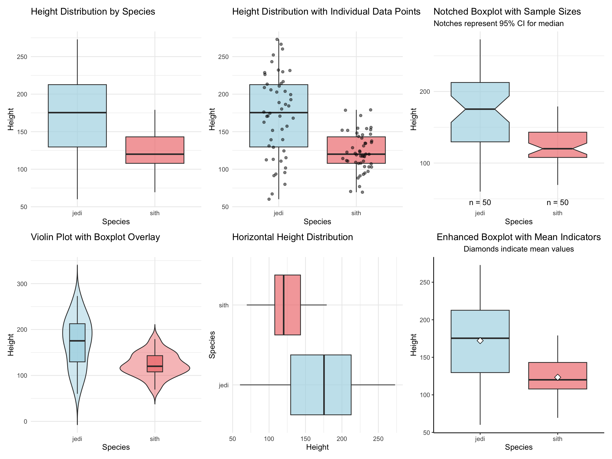
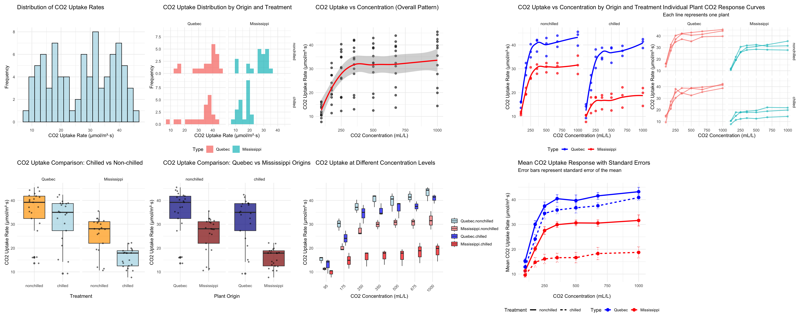

library(ggpubr)
library(patchwork)
library(tidyverse)1 1. Compare the distributions of the body heights of the two species from the ‘magic_guys.csv’ dataset graphically.
1.1 a. using the basic ‘hist’ function as well as ‘ggplot’ and ‘geom_histogram’ functions from the ggplot2 package. Optimize the plots for example by trying several different ‘breaks’. Note that ggplot2-based functions give you many more options for changing the visualization parameters, try some of them.
setwd("/Users/ninghe/Desktop/course/riken-ki")
data <- read_csv("./Week1/data/magic_guys.csv")
print(data)# A tibble: 100 × 4
uniqId species length weight
<chr> <chr> <dbl> <dbl>
1 p1 jedi 175. 71.3
2 p2 jedi 252. 70.8
3 p3 jedi 230. 70.7
4 p4 jedi 176. 80.4
5 p5 jedi 213. 82
6 p6 jedi 112. 64.2
7 p7 jedi 67.1 71.8
8 p8 jedi 229. 75
9 p9 jedi 153. 74.3
10 p10 jedi 102. 72.8
# ℹ 90 more rowsspecies1_data <- data[data$species == unique(data$species)[1], ]
species2_data <- data[data$species == unique(data$species)[2], ]
par(mfrow = c(2, 2))
hist(species1_data$length,
main = paste("Height Distribution -", unique(data$species)[1]),
xlab = "Height",
col = "lightblue")
hist(species2_data$length,
main = paste("Height Distribution -", unique(data$species)[2]),
xlab = "Height",
col = "lightcoral")
breaks1 <- seq(min(species1_data$length), max(species1_data$length),
length.out = ceiling(log2(nrow(species1_data))) + 1)
breaks2 <- seq(min(species2_data$length), max(species2_data$length),
length.out = ceiling(log2(nrow(species2_data))) + 1)
hist(species1_data$length,
breaks = breaks1,
main = paste("Height Distribution (Optimized) -", unique(data$species)[1]),
xlab = "Height",
col = "lightblue")
hist(species2_data$length,
breaks = breaks2,
main = paste("Height Distribution (Optimized) -", unique(data$species)[2]),
xlab = "Height",
col = "lightcoral")
p1 <- ggplot(data, aes(x = length, fill = species)) +
geom_histogram(alpha = 0.7, position = "identity") +
facet_wrap(~species, scales = "free_y") +
labs(title = "Height Distribution by Species (Default bins)",
x = "Height",
y = "Frequency") +
theme_minimal() +
theme(legend.position = "bottom")
p2 <- ggplot(data, aes(x = length, fill = species)) +
geom_histogram(bins = 30, alpha = 0.7, position = "identity") +
facet_wrap(~species, scales = "free_y") +
labs(title = "Height Distribution by Species (30 bins)",
x = "Height",
y = "Frequency") +
theme_minimal() +
theme(legend.position = "bottom")
range_height <- range(data$length)
optimal_binwidth <- (range_height[2] - range_height[1]) / 25
p3 <- ggplot(data, aes(x = length, fill = species)) +
geom_histogram(binwidth = optimal_binwidth, alpha = 0.7, position = "identity") +
facet_wrap(~species, scales = "free_y") +
labs(title = paste("Height Distribution by Species (binwidth =", round(optimal_binwidth, 2), ")"),
x = "Height",
y = "Frequency") +
theme_minimal() +
theme(legend.position = "bottom")
p4 <- ggplot(data, aes(x = length, fill = species)) +
geom_histogram(bins = 25, alpha = 0.6, position = "identity") +
labs(title = "Overlaid Height Distribution Comparison",
x = "Height",
y = "Frequency") +
theme_minimal() +
theme(legend.position = "bottom") +
scale_fill_manual(values = c("lightblue", "lightcoral"))
p5 <- ggplot(data, aes(x = length, fill = species)) +
geom_histogram(aes(y = after_stat(density)), bins = 25, alpha = 0.6, position = "identity") +
geom_density(alpha = 0.3, size = 1) +
labs(title = "Height Distribution with Density Overlay",
x = "Height",
y = "Density") +
theme_minimal() +
theme(legend.position = "bottom") +
scale_fill_manual(values = c("lightblue", "lightcoral"))
wrap_plots(p1, p2, p3, p4, p5, nrow = 1)
cat("\nStatistical Summary by Species:\n")
Statistical Summary by Species:data %>%
group_by(species) %>%
summarise(
n = n(),
mean_height = mean(length, na.rm = TRUE),
median_height = median(length, na.rm = TRUE),
sd_height = sd(length, na.rm = TRUE),
min_height = min(length, na.rm = TRUE),
max_height = max(length, na.rm = TRUE),
.groups = 'drop'
) %>%
print()# A tibble: 2 × 7
species n mean_height median_height sd_height min_height max_height
<chr> <int> <dbl> <dbl> <dbl> <dbl> <dbl>
1 jedi 50 172. 175. 54.7 60.1 273.
2 sith 50 123. 120. 25.7 69.4 179.1.2 b. Do the same comparison as in a. but with boxplots. If you want to use the ggplot2-package, use the functions ‘ggplot’ and ‘geom_boxplot’.
par(mfrow = c(2, 2))
boxplot(length ~ species,
data = data,
main = "Height Distribution by Species",
xlab = "Species",
ylab = "Height",
col = c("lightblue", "lightcoral"),
border = "black",
outline = TRUE)
species_counts <- table(data$species)
text(x = 1:length(species_counts),
y = par("usr")[3] - 0.05 * diff(par("usr")[3:4]),
labels = paste("n =", species_counts),
pos = 3,
xpd = TRUE)
boxplot(length ~ species,
data = data,
main = "Height Distribution by Species (Horizontal)",
xlab = "Height",
ylab = "Species",
col = c("lightblue", "lightcoral"),
border = "black",
horizontal = TRUE,
outline = TRUE)
boxplot(length ~ species,
data = data,
main = "Height Distribution with Median CI",
xlab = "Species",
ylab = "Height",
col = c("lightblue", "lightcoral"),
border = "black",
notch = TRUE,
outline = TRUE)
boxplot(length ~ species,
data = data,
main = "Enhanced Height Distribution",
xlab = "Species",
ylab = "Height",
col = c("lightblue", "lightcoral"),
border = c("darkblue", "darkred"),
lwd = 2,
outline = TRUE,
pch = 16,
cex = 0.8,
whisklty = 1,
staplelty = 1,
whisklwd = 2,
staplelwd = 2)
p1 <- ggplot(data, aes(x = species, y = length, fill = species)) +
geom_boxplot(alpha = 0.7, outlier.shape = 16, outlier.size = 2) +
labs(title = "Height Distribution by Species",
x = "Species",
y = "Height") +
theme_minimal() +
theme(legend.position = "none") +
scale_fill_manual(values = c("lightblue", "lightcoral"))
p2 <- ggplot(data, aes(x = species, y = length, fill = species)) +
geom_boxplot(alpha = 0.7, outlier.shape = NA) +
geom_jitter(width = 0.2, alpha = 0.5, size = 1.5) +
labs(title = "Height Distribution with Individual Data Points",
x = "Species",
y = "Height") +
theme_minimal() +
theme(legend.position = "none") +
scale_fill_manual(values = c("lightblue", "lightcoral"))
sample_sizes <- data %>%
group_by(species) %>%
summarise(n = n(), .groups = 'drop')
p3 <- ggplot(data, aes(x = species, y = length, fill = species)) +
geom_boxplot(notch = TRUE, alpha = 0.7, outlier.shape = 16) +
geom_text(data = sample_sizes,
aes(x = species, y = min(data$length) - 0.05 * diff(range(data$length)),
label = paste("n =", n)),
inherit.aes = FALSE,
vjust = 1) +
labs(title = "Notched Boxplot with Sample Sizes",
x = "Species",
y = "Height",
subtitle = "Notches represent 95% CI for median") +
theme_minimal() +
theme(legend.position = "none") +
scale_fill_manual(values = c("lightblue", "lightcoral"))
p4 <- ggplot(data, aes(x = species, y = length, fill = species)) +
geom_violin(alpha = 0.5, trim = FALSE) +
geom_boxplot(width = 0.2, alpha = 0.8, outlier.shape = 16) +
labs(title = "Violin Plot with Boxplot Overlay",
x = "Species",
y = "Height") +
theme_minimal() +
theme(legend.position = "none") +
scale_fill_manual(values = c("lightblue", "lightcoral"))
p5 <- ggplot(data, aes(x = species, y = length, fill = species)) +
geom_boxplot(alpha = 0.7, outlier.shape = 16) +
coord_flip() +
labs(title = "Horizontal Height Distribution",
x = "Species",
y = "Height") +
theme_minimal() +
theme(legend.position = "none") +
scale_fill_manual(values = c("lightblue", "lightcoral"))
p6 <- ggplot(data, aes(x = species, y = length, fill = species)) +
geom_boxplot(alpha = 0.7,
outlier.shape = 21,
outlier.fill = "white",
outlier.color = "black",
outlier.size = 2,
notch = FALSE) +
stat_summary(fun = mean, geom = "point", shape = 23, size = 3, fill = "white") +
labs(title = "Enhanced Boxplot with Mean Indicators",
x = "Species",
y = "Height",
subtitle = "Diamonds indicate mean values") +
theme_classic() +
theme(legend.position = "none",
plot.title = element_text(hjust = 0.5),
plot.subtitle = element_text(hjust = 0.5)) +
scale_fill_manual(values = c("lightblue", "lightcoral"))
wrap_plots(p1, p2, p3, p4, p5, p6, nrow = 2)
1.3 c. Save the plots with the ‘png’, ‘pdf’, and ‘svg’ formats. In which situation would you use which file format?
#pdf("xxxxxxxxx", height = 10, width = 10)
#dev.off()
#ggsave("xxxxxxxxx", height = 10, width = 10)3 3. Visualize the data in the CO2 dataset in a way that gives you a deeper understanding of the data. What do you see?
data(CO2)
p1 <- ggplot(CO2, aes(x = uptake)) +
geom_histogram(bins = 20, fill = "lightblue", alpha = 0.7, color = "black") +
labs(title = "Distribution of CO2 Uptake Rates",
x = "CO2 Uptake Rate (μmol/m²·s)",
y = "Frequency") +
theme_minimal()
p2 <- ggplot(CO2, aes(x = uptake, fill = Type)) +
geom_histogram(bins = 15, alpha = 0.7, position = "identity") +
facet_grid(Treatment ~ Type) +
labs(title = "CO2 Uptake Distribution by Origin and Treatment",
x = "CO2 Uptake Rate (μmol/m²·s)",
y = "Frequency") +
theme_minimal() +
theme(legend.position = "bottom")
p3 <- ggplot(CO2, aes(x = conc, y = uptake)) +
geom_point(alpha = 0.6, size = 2) +
geom_smooth(method = "loess", se = TRUE, color = "red", linewidth = 1.2) +
labs(title = "CO2 Uptake vs Concentration (Overall Pattern)",
x = "CO2 Concentration (mL/L)",
y = "CO2 Uptake Rate (μmol/m²·s)") +
theme_minimal()
p4 <- ggplot(CO2, aes(x = conc, y = uptake, color = Type)) +
geom_point(alpha = 0.7, size = 2) +
geom_smooth(method = "loess", se = FALSE, linewidth = 1.2) +
facet_wrap(~Treatment) +
labs(title = "CO2 Uptake vs Concentration by Origin and Treatment",
x = "CO2 Concentration (mL/L)",
y = "CO2 Uptake Rate (μmol/m²·s)") +
theme_minimal() +
scale_color_manual(values = c("Quebec" = "blue", "Mississippi" = "red")) +
theme(legend.position = "bottom")
p5 <- ggplot(CO2, aes(x = conc, y = uptake, color = Type)) +
geom_line(aes(group = Plant), alpha = 0.7, linewidth = 0.8) +
geom_point(alpha = 0.5, size = 1.5) +
facet_grid(Treatment ~ Type) +
labs(title = "Individual Plant CO2 Response Curves",
x = "CO2 Concentration (mL/L)",
y = "CO2 Uptake Rate (μmol/m²·s)",
subtitle = "Each line represents one plant") +
theme_minimal() +
theme(legend.position = "none")
p6 <- ggplot(CO2, aes(x = Treatment, y = uptake, fill = Treatment)) +
geom_boxplot(alpha = 0.7) +
geom_jitter(width = 0.2, alpha = 0.5, size = 1) +
facet_wrap(~Type) +
labs(title = "CO2 Uptake Comparison: Chilled vs Non-chilled",
x = "Treatment",
y = "CO2 Uptake Rate (μmol/m²·s)") +
theme_minimal() +
theme(legend.position = "none") +
scale_fill_manual(values = c("nonchilled" = "orange", "chilled" = "lightblue"))
p7 <- ggplot(CO2, aes(x = Type, y = uptake, fill = Type)) +
geom_boxplot(alpha = 0.7) +
geom_jitter(width = 0.2, alpha = 0.5, size = 1) +
facet_wrap(~Treatment) +
labs(title = "CO2 Uptake Comparison: Quebec vs Mississippi Origins",
x = "Plant Origin",
y = "CO2 Uptake Rate (μmol/m²·s)") +
theme_minimal() +
theme(legend.position = "none") +
scale_fill_manual(values = c("Quebec" = "darkblue", "Mississippi" = "darkred"))
p8 <- ggplot(CO2, aes(x = factor(conc), y = uptake, fill = interaction(Type, Treatment))) +
geom_boxplot(alpha = 0.7) +
labs(title = "CO2 Uptake at Different Concentration Levels",
x = "CO2 Concentration (mL/L)",
y = "CO2 Uptake Rate (μmol/m²·s)") +
theme_minimal() +
theme(axis.text.x = element_text(angle = 45, hjust = 1),
legend.title = element_blank()) +
scale_fill_manual(values = c("Quebec.nonchilled" = "lightblue",
"Quebec.chilled" = "blue",
"Mississippi.nonchilled" = "lightcoral",
"Mississippi.chilled" = "red"))
interaction_data <- CO2 %>%
group_by(Type, Treatment, conc) %>%
summarise(mean_uptake = mean(uptake),
se_uptake = sd(uptake) / sqrt(n()),
.groups = 'drop')
p9 <- ggplot(interaction_data, aes(x = conc, y = mean_uptake, color = Type, linetype = Treatment)) +
geom_line(linewidth = 1.2) +
geom_point(size = 3) +
geom_errorbar(aes(ymin = mean_uptake - se_uptake, ymax = mean_uptake + se_uptake),
width = 20, alpha = 0.7) +
labs(title = "Mean CO2 Uptake Response with Standard Errors",
x = "CO2 Concentration (mL/L)",
y = "Mean CO2 Uptake Rate (μmol/m²·s)",
subtitle = "Error bars represent standard error of the mean") +
theme_minimal() +
scale_color_manual(values = c("Quebec" = "blue", "Mississippi" = "red")) +
theme(legend.position = "bottom")
wrap_plots(p1, p2, p3, p4, p5, p6, p7, p8, p9, nrow = 2)
4 Date & Session
date()
sessionInfo()
## [1] "Thu Sep 25 10:40:44 2025"
## R version 4.3.1 (2023-06-16)
## Platform: x86_64-apple-darwin13.4.0 (64-bit)
## Running under: macOS Big Sur ... 10.16
##
## Matrix products: default
## BLAS/LAPACK: /Users/ninghe/miniconda3/envs/sr4/lib/libopenblasp-r0.3.27.dylib; LAPACK version 3.12.0
##
## locale:
## [1] en_US.UTF-8/en_US.UTF-8/en_US.UTF-8/C/en_US.UTF-8/en_US.UTF-8
##
## time zone: Europe/Stockholm
## tzcode source: system (macOS)
##
## attached base packages:
## [1] stats graphics grDevices utils datasets methods base
##
## other attached packages:
## [1] lubridate_1.9.3 forcats_1.0.0 stringr_1.5.1 dplyr_1.1.4
## [5] purrr_1.0.2 readr_2.1.5 tidyr_1.3.1 tibble_3.2.1
## [9] tidyverse_2.0.0 patchwork_1.3.0 ggpubr_0.6.0 ggplot2_3.5.1
##
## loaded via a namespace (and not attached):
## [1] utf8_1.2.4 generics_0.1.3 rstatix_0.7.2 lattice_0.22-6
## [5] stringi_1.8.4 hms_1.1.3 digest_0.6.36 magrittr_2.0.3
## [9] evaluate_0.24.0 grid_4.3.1 timechange_0.3.0 fastmap_1.2.0
## [13] Matrix_1.6-5 jsonlite_1.8.8 backports_1.5.0 mgcv_1.9-1
## [17] fansi_1.0.6 scales_1.3.0 abind_1.4-5 cli_3.6.3
## [21] crayon_1.5.3 rlang_1.1.4 splines_4.3.1 bit64_4.0.5
## [25] munsell_0.5.1 withr_3.0.0 yaml_2.3.9 parallel_4.3.1
## [29] tools_4.3.1 tzdb_0.4.0 ggsignif_0.6.4 colorspace_2.1-0
## [33] broom_1.0.6 vctrs_0.6.5 R6_2.5.1 lifecycle_1.0.4
## [37] bit_4.0.5 car_3.1-2 htmlwidgets_1.6.4 vroom_1.6.5
## [41] pkgconfig_2.0.3 pillar_1.9.0 gtable_0.3.5 glue_1.7.0
## [45] xfun_0.45 tidyselect_1.2.1 rstudioapi_0.16.0 knitr_1.48
## [49] farver_2.1.2 nlme_3.1-165 htmltools_0.5.8.1 labeling_0.4.3
## [53] rmarkdown_2.27 carData_3.0-5 compiler_4.3.1